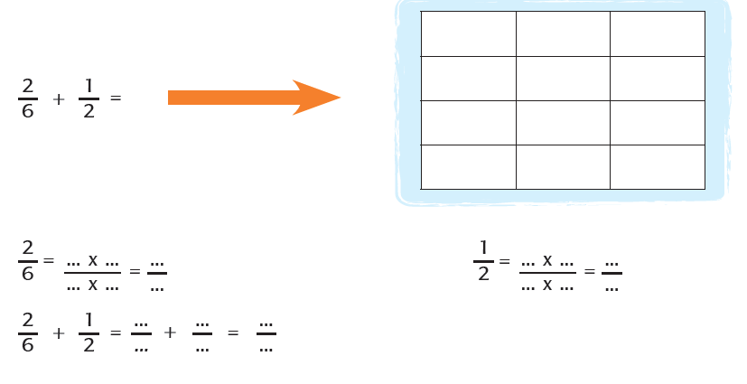
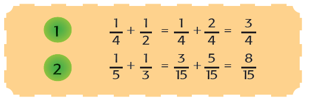
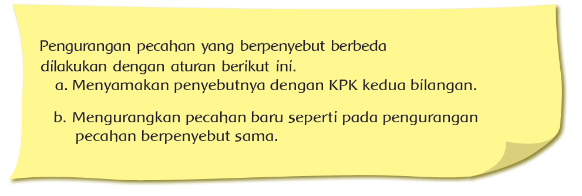

ayo mencoba
Kerjakan soal berikut!

Diskusikan dalam kelompok! Apa yang dapat disimpulkan dari kegiatan ini?
Dari cara tadi, diperoleh cara bahwa untuk menjumlahkan pecahan penyebut yang
berbeda kita dapat menggunakan Kelipatan Persekutuan Kecil (KPK).
Contoh:

Masih ingatkah kamu cara mencari KPK dari dua bilangan?
